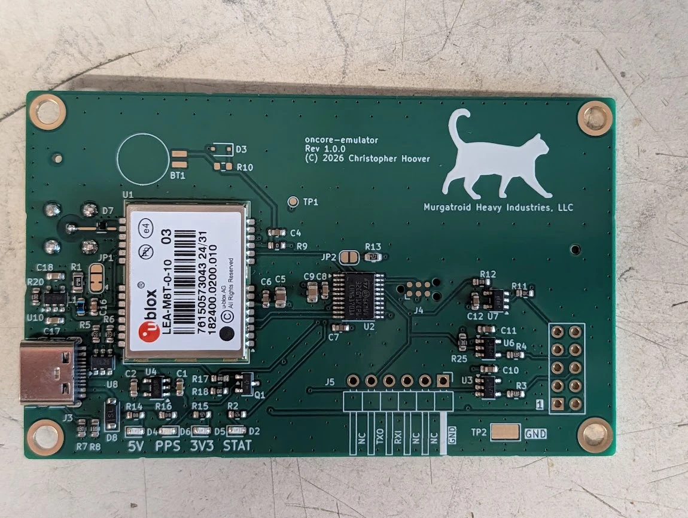

Which instrument images the emulator has been run against, and how: a row per image, a column per way of running it or test. The in-emulation columns run the instrument's image in emulation from power-on, without its 1 PPS input under test; the hardware columns run the instrument itself; the leap second columns run oncore-host's test hooks against the image. A Yes, Partial or In review links to where the repository records it, and the generator checks that the section is there.
| Image | In emulation | Hardware | Leap second | Date | ||||
|---|---|---|---|---|---|---|---|---|
| oncore-host | Board | oncore-host, instrument | Board in instrument | Leap second pending | Leap second crossing | oncore-host | Board | |
| 58503A 3633 | Not yetout of scope of the conformance test | Not yetthe switch to eight channels not run | Not yet | Not yet | Not yet | Not yet | Not yet | Not yet |
| 58503A 3704 | Yeslocked within 15 min, 2026-10-31 | Yeslocked at 142 s | Not yet | Yeslocked at 13 min, then days against a CNS Clock II | Yesreads @@Bj alone, booked for the quarter's end, 2026-11-12 | Yescrossed with lock held, a second inserted, ACC +19, 2026-11-12 | Yesfrom 135 s, vp; 150 s, vp-six; 2026-11-24 | Partialfrom 135 s, vp; vp-six: no date in 10 min, Tracking 0, twice; 2026-11-24 |
| 58503B 1.01.04 | Yeslocked on the UT Plus path at 134 s, the VP path at 129 s, 2026-11-12 | Yeslocked on the UT Plus path at 129 s, the VP path at 140 s, six channels at 152 s, 2026-11-16 | Not yet | Not yet | Yesreads @@Bj alone, booked for the quarter's end; on both paths, 2026-11-12 | Yescrossed with lock held on both paths; 23:59:60 read on the UT Plus path, ACC +19, 2026-11-12 | Yesfrom 123 s, vp; 141 s, vp-six; 123 s, ut-plus; 2026-11-24 | Yesfrom 141 s, vp and vp-six; 123 s, ut-plus; 2026-11-24 |
| Z3801A 3543 | Yeslocked within 15 min; holdover when the stream paused | Yeslocked at 276 s, 7 h | Not yet | Not yet | Yesreads @@Bj alone, booked for the quarter's end, 2026-11-12 | Yescrossed with lock held, GPS time unbroken, ACC +19; its screen still pending 10 min after, 2026-11-12 | Yesfrom 159 s, 2026-11-24 | Yesfrom 159 s, 2026-11-24 |
| Z3805A 3543B | Yeslocked at 265 s, warm-up skipped, 2026-11-23 | Yeslocked at 342 s | Not yet | Not yet | Yesreads @@Bj alone, booked for the quarter's end, 2026-11-12 | Yescrossed with lock held, GPS time unbroken, ACC +19; its screen still pending 10 min after, 2026-11-12 | Yesfrom 165 s, 2026-11-24 | Yesfrom 165 s, 2026-11-24 |
| Z3815A 4010 | Not planneda Furuno GT-74 on NMEA, not an Oncore | Not planned | Not planned | Not planned | Not planned | Not planned | Not planned | Not planned |
| Z3816A 4001 | Yeslocked on the UT Plus path at 138 s, the VP path at 144 s, 2026-11-12 | Yeslocked on the UT Plus path at 138 s, the VP path at 144 s, six channels at 156 s, 2026-11-16 | Not yet | Not yet | Yesreads @@Bj alone, booked for the quarter's end; on both paths, 2026-11-12 | Yescrossed with lock held on both paths, GPS time unbroken, ACC +19, 2026-11-12 | Yesfrom 135 s, vp and ut-plus; 153 s, vp-six; 2026-11-24 | Yesfrom 135 s, vp and ut-plus; 153 s, vp-six; 2026-11-24 |
| Z3817A 3752 | Not yet | Yeslocked to TIMEREF2 at 862 s, 592 s of it the oven warm-up, 2026-11-16 | Yesoncore-host's z3817a preset: GPS reference valid, TFOM 3, FFOM 0, 2026-11-11 | Not yet | Not yet | Not yet | Yesfrom 393 s, 2026-11-24 | Yesfrom 376 s, the z3817a build, 2026-11-24 |